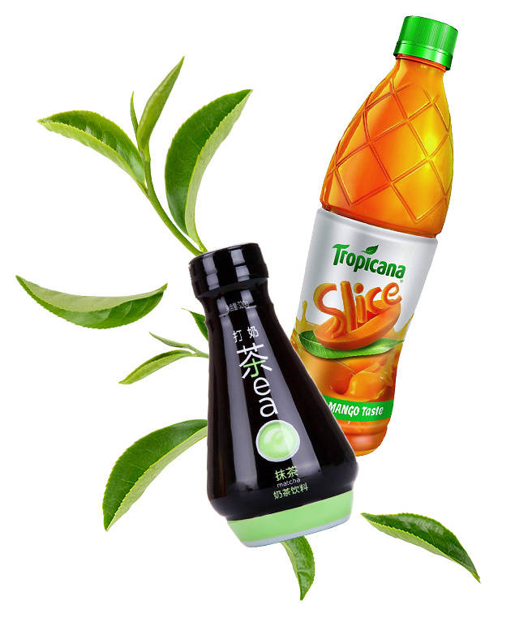

El sector de los jugos y de las bebidas funcionales ha experimentado los mayores cambios en los últimos años, diversificando la propia oferta para interpretar las necesidades del consumidor final de productos naturales relacionados con el cuidado de la salud, sin olvidar la explosión de los distintos tés y productos isotónicos.
Son todos productos sin gas y sensibles a la contaminación microbiológica: por lo tanto, es necesario diseñar soluciones capaces de garantizar un alto control de la carga bacteriana con el fin de obtener un producto seguro y con una buena shelf-life.
SIPA ofrece soluciones flexibles e integradas para la gestión de productos llenados en caliente (límpidos o con pulpas), o en frío, o ultra-clean, que también incluyen el tratamiento térmico de pasteurización para tener un control total sobre todas las fases del proceso: desde la producción de la preforma y del envase, al tratamiento del producto y al llenado, hasta la paletización final. La gama también incluye todos los elementos típicos de una línea de llenado en caliente, como el tilting device para la esterilización interna de las tapas y el túnel de enfriamiento
Durante el diseño, se ha prestado particular atención al tratamiento de los productos con pulpas y fibras, aun de grandes dimensiones, tanto en versión con "corriente única" como con "doble corriente" (con dosificador de trozos volumétrico integrado en el monobloque). La vasta experiencia en el diseño del envase y en la gestión de todo el proceso de llenado Hot Fill, nos ha permitido fabricar líneas innovadoras con dosificación de nitrógeno, o soluciones multi-producto extremadamente flexibles, que permiten tratar en la misma línea de embotellado, tanto productos gasificados como Hot Fill. La amplitud de la gama y la habilidad de personalizar nuestras soluciones para líneas de llenado en caliente para botellas de PET, nos permite brindar una respuesta óptima a las exigencias de un mercado tan diversificado.
Jugos de frutas, néctares de frutas, té helado, bebidas isotónicas y funcionales. Podemos manejar una amplia gama de productos tanto límpidos como con pulpas y fibras, llenados en caliente o en frío.